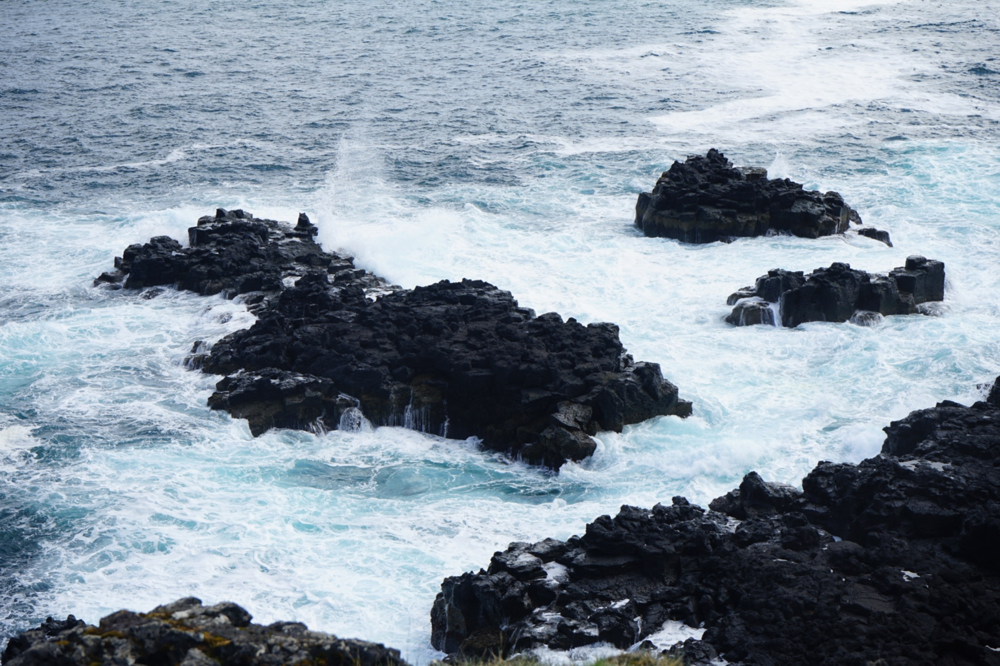
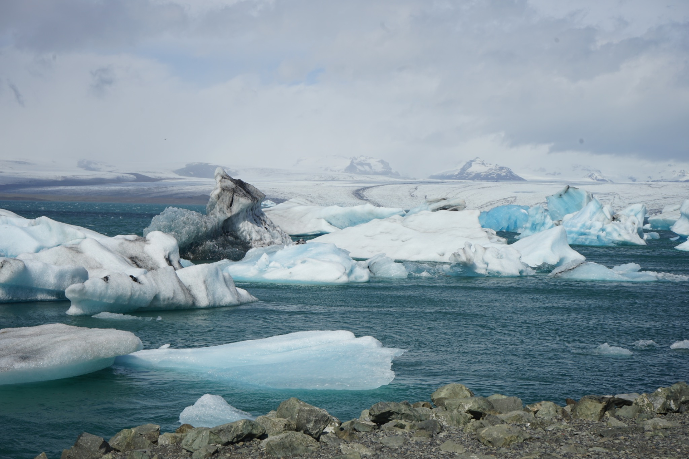
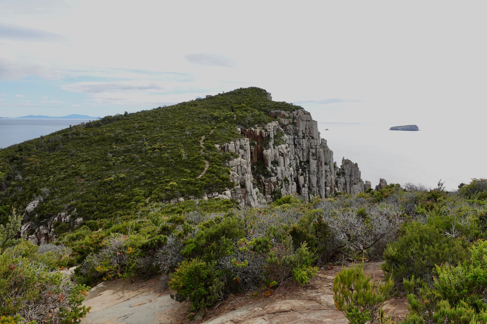
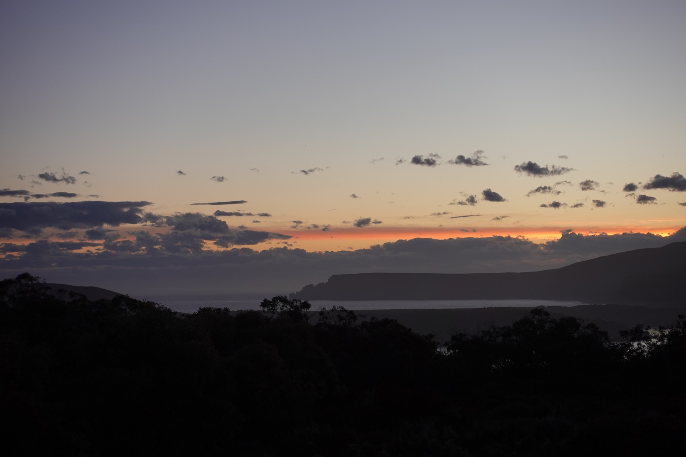
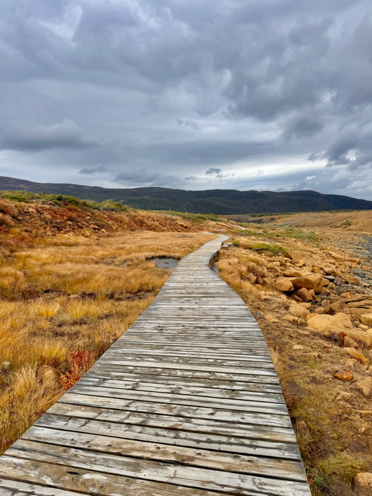
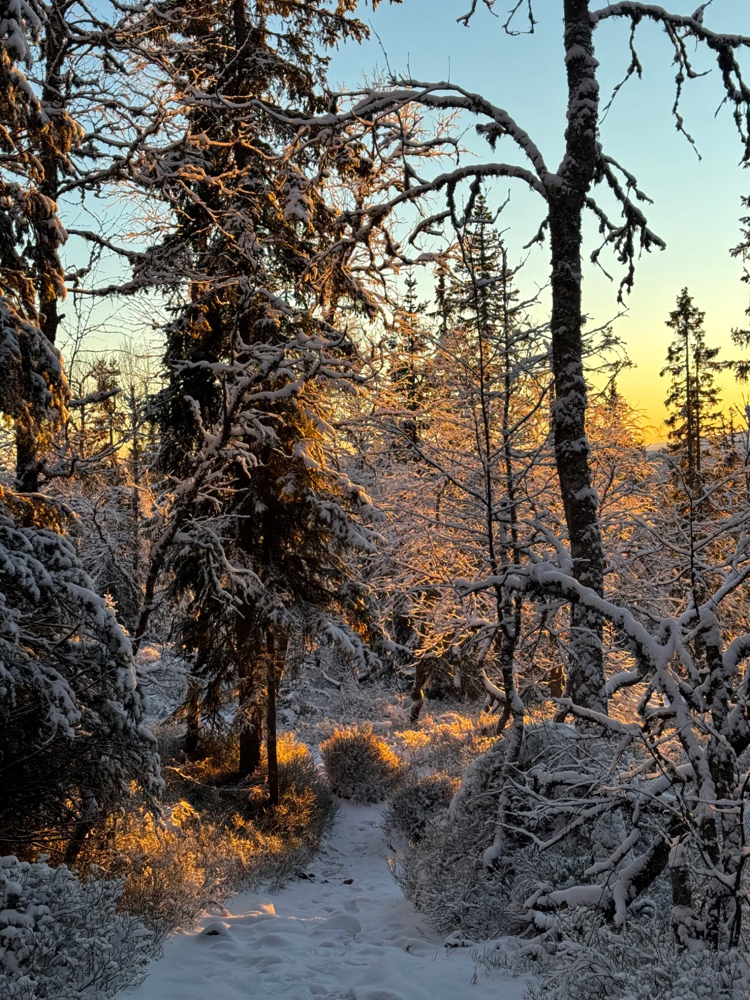
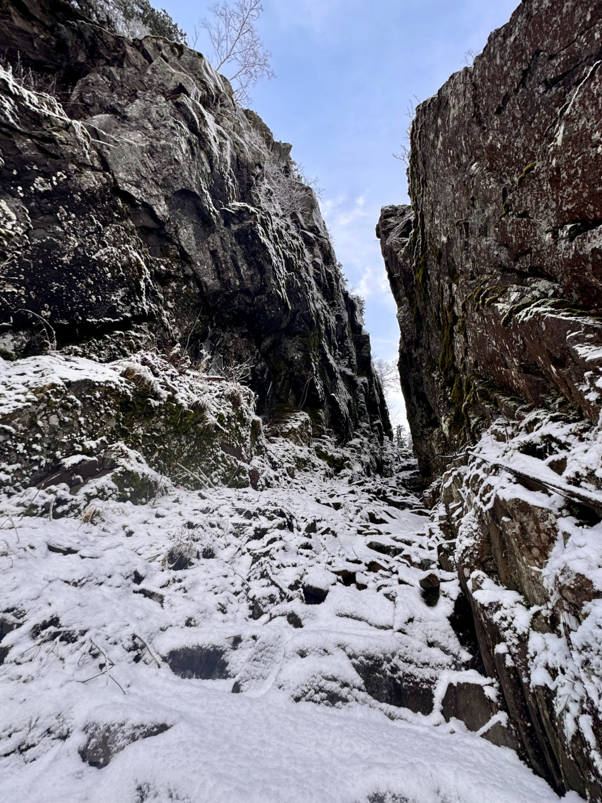

Photo gallery
Moments from the road and trail
Hover over each image to see the place and a short note about what made it stand out.

Snæfellsnes Coast, Iceland
Dark volcanic cliffs, cold wind, and a shoreline that feels raw and exposed.

Kirkjufell, Iceland
One of the calmest views of the trip, with glassy water and a sharp mountain silhouette.

Jökulsárlón, Iceland
Layered ice, deep blue color, and a landscape that looks almost unreal in person.

Tasman Peninsula, Tasmania
Steep cliffs and open ocean after a coastal climb with nonstop views.

Tasmanian Coast
Late light, layered shoreline, and the softer side of a rugged coastal day.

Newfoundland Trail
Open scenery, clean air, and a trail in Newfoundland that feels easy to stay on and enjoy.

Norway Winter Forest
Quiet snow, low light, and the kind of cold-weather walk that slows everything down.

Norway Rocky Pass
Narrow stone walls and deep snow made this section feel dramatic and enclosed.